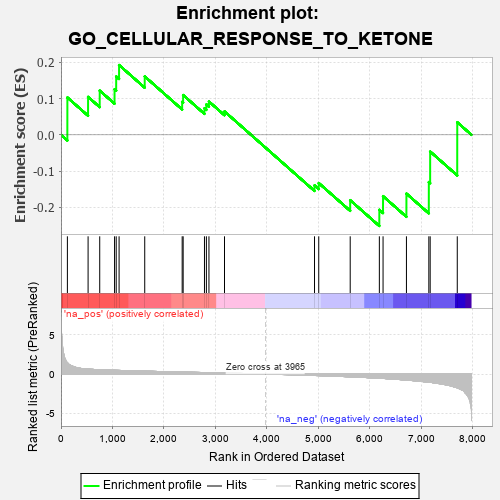
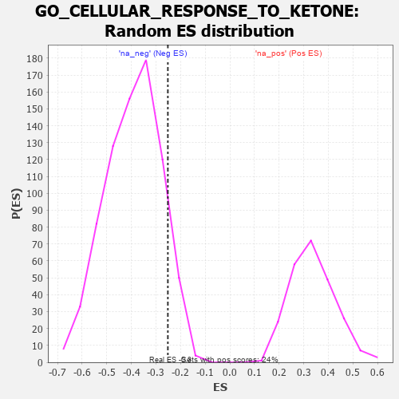

| | | Dataset | 7d |
| Phenotype | NoPhenotypeAvailable |
| Upregulated in class | na_neg |
| GeneSet | GO_CELLULAR_RESPONSE_TO_KETONE |
| Enrichment Score (ES) | -0.25170562 |
| Normalized Enrichment Score (NES) | -0.6421456 |
| Nominal p-value | 0.9013158 |
| FDR q-value | 1.0 |
| FWER p-Value | 1.0 |
Table: GSEA Results Summary

Fig 1: Enrichment plot: GO_CELLULAR_RESPONSE_TO_KETONE
Profile of the Running ES Score & Positions of GeneSet Members on the Rank Ordered List
| PROBE | GENE SYMBOL | GENE_TITLE | RANK IN GENE LIST | RANK METRIC SCORE | RUNNING ES | CORE ENRICHMENT | | 1 | ADCY8 | | | 124 | 1.418 | 0.1032 | No |
| 2 | RWDD1 | | | 526 | 0.621 | 0.1048 | No |
| 3 | ELK1 | | | 752 | 0.545 | 0.1222 | No |
| 4 | AKT1 | | | 1040 | 0.476 | 0.1259 | No |
| 5 | AIFM1 | | | 1072 | 0.469 | 0.1613 | No |
| 6 | SRC | | | 1128 | 0.459 | 0.1928 | No |
| 7 | CDK4 | | | 1626 | 0.370 | 0.1613 | No |
| 8 | CDC5L | | | 2353 | 0.253 | 0.0912 | No |
| 9 | NDOR1 | | | 2372 | 0.250 | 0.1099 | No |
| 10 | XRN1 | | | 2786 | 0.185 | 0.0734 | No |
| 11 | PCK2 | | | 2823 | 0.180 | 0.0840 | No |
| 12 | DCPS | | | 2873 | 0.170 | 0.0921 | No |
| 13 | AHR | | | 3175 | 0.126 | 0.0648 | No |
| 14 | CBX3 | | | 4923 | -0.183 | -0.1396 | No |
| 15 | KLF4 | | | 5005 | -0.198 | -0.1332 | No |
| 16 | LARP1 | | | 5616 | -0.349 | -0.1806 | No |
| 17 | KLF2 | | | 6182 | -0.532 | -0.2072 | Yes |
| 18 | TFAP4 | | | 6254 | -0.556 | -0.1695 | Yes |
| 19 | EGFR | | | 6708 | -0.765 | -0.1623 | Yes |
| 20 | CFTR | | | 7143 | -1.030 | -0.1306 | Yes |
| 21 | AR | | | 7169 | -1.046 | -0.0461 | Yes |
| 22 | ADCY1 | | | 7695 | -1.752 | 0.0347 | Yes |
Table: GSEA details [plain text format]

Fig 2: GO_CELLULAR_RESPONSE_TO_KETONE: Random ES distribution
Gene set null distribution of ES for GO_CELLULAR_RESPONSE_TO_KETONE